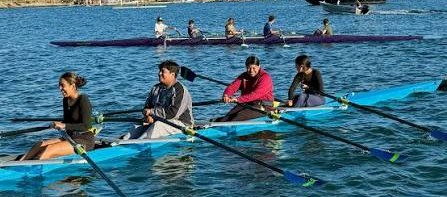

East Bay Rowing Club is Open to all Oakland Tech, Skyline, Oaklang High, and Life Academy Students
Water Practices 3 Days/Week (Mondays, Tuesdays, Thursdays) 4:30PM-7:00PM
Practices at Jack London Aquatics Center (115 Embarcadero, Oakland, CA 94607)
FEE - Free for OUSD students at Oakland Tech, Oakland High, Skyline, and Life Academy
OUSD High School Students, contact oal@eastbayrowingclub.org for Discount Code to receive 100% off the program cost
Practices 5 Days/Week (Mondays, Tuesdays, Thursdays, Fridays, Saturdays)
Mon, Wed, Fri, Sat 4:30PM-7:00PM on Water
Tues 4:30PM-6:30PM on Land
Practices at Jack London Aquatics Center (115 Embarcadero, Oakland, CA 94607)
FEE - $789 for the remainder of fall (for novices completing the OAL season)
Financial Aid Available
Practices 5 Days/Week (Mondays, Tuesdays, Thursdays, Fridays, Saturdays)
Mon, Wed, Fri, Sat 4:30PM-7:00PM on Water
Tues 4:30PM-6:30PM on Land
Practices at Jack London Aquatics Center (115 Embarcadero, Oakland, CA 94607)
FEE - $1500 per semester for 2025/2026 - $375/month
Financial Aid Available
OAL Season Aug 10-Oct 10,
OUSD Students pay $284, Aug. 10 - Oct. 10 (for Fri/Sat Practice)
Standard rate resumes Oct 12.
Practices 5 Days/Week (Mondays, Tuesdays, Thursdays, Fridays, Saturdays)
Mon, Wed, Fri, Sat 4:30PM-7:00PM on Water
Tues 4:30PM-6:30PM on Land
Practices at Jack London Aquatics Center (115 Embarcadero, Oakland, CA 94607)
FEE - $1500 per semester for 2025/2026 - $375/month
Financial Aid Available
Register for the team in Crewlab
Sign all necessary waivers and documents in CrewLab
Upload your Swim Certification form to CrewLab
OUSD STUDENTS: Upload your Physical to Arbiter
Fill out the Financial Aid Application if cost is a barrier
EBRC is an OAL Program, approved as PE credit for OUSD students. Students must submit their physicals to their school Arbiter account in order to participate.
Physicals can be aquired from you doctor.
OUSD students must submit their physicals to their school Arbiter account. Physicals are valid for 2 years. If your physical is expired, you will need to get a new one before you can row.
Common options for transportation to and from practices include carpooling, the EBRC Skyline Shuttle, and public transit.